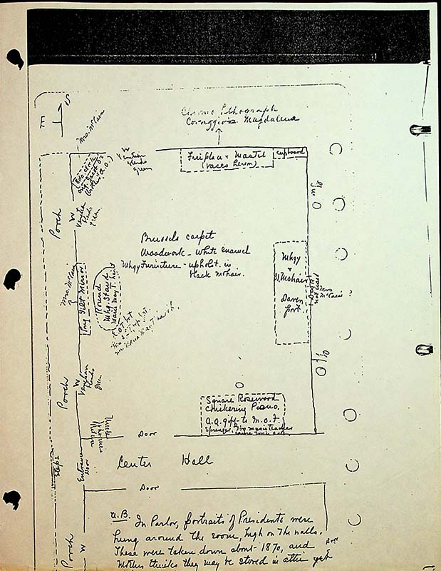

[Top left is compass indicating south is up and east is left]:
[Porch runs along eastern side of house]:
[One window on south/top wall, two on east/left wall. Windows are noted to have green Venetian blinds]:
8 da. Clock, Mrs. McCain
Orig. Jacob O's, brother of A.O.
[top left corner]:
Long Gilt Mirror, Mrs McCain [center left wall]:
Round Mhg stand Maria May T. Lint [in front of mirror]:
ROT ?let 2 ??illegible wife Mrs. Maria May T. Lint [faded note below mirror]:
center hall [across bottom middle of page]:
Fireplace and mantel, [top right wall]:
cupboard [to right corner]:
chroma lithogrpah Carravaggio Magdalena [top right written outside of room with arrow point down]:
Brussels Carpet [center of room]:
Woodwork- white enamel [center of room]:
Mhgy furniture upholstered in bl mohair [center of room]:
Mhgy [mahogany] & bl[ack] mohair davenport [right wall center]:
door not used [center of right wall]:
Rosewood Chickering Piano []:
A.O gift to M.O.F. Springer music teacher, c???? T???each []:
U. B
In parlor,Portraits of Presidents were hung around the room, high on the walls. These were taken down about 1870 and mother thinks they were stored in the attic.